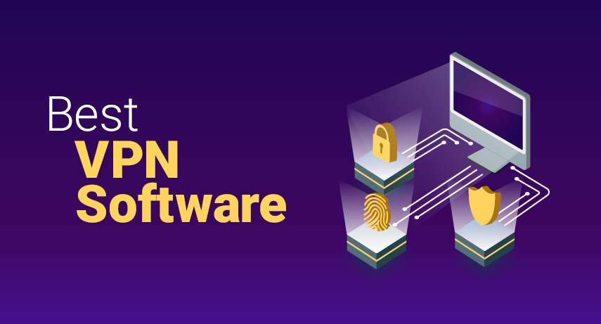
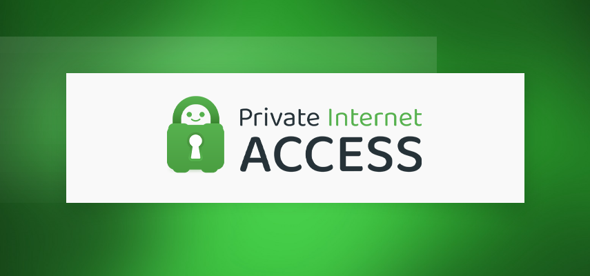
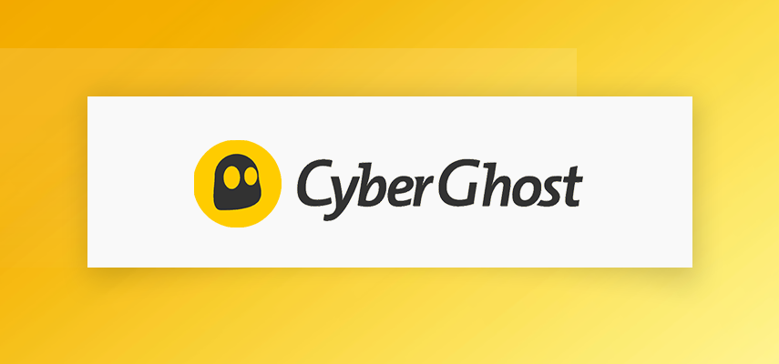

The Best VPNs For 2025 (Compatible With PC, Mac, and Mobile Phone)
James McGill | Updated on February 4th 2023Privacy and Technology Consultant In a hurry? Here’s the top VPN for 2025:
- 🏆 TotalVPN: Powered by more than 7,000 servers in 90 countries, this leading VPN brand is our top choice for protecting your privacy online. Boasting solid security features, safeguard your data against the prying eyes of the government, hackers, ISP's, and other online intruders.
- Get the best VPN of 2025 here.
- Read more about TotalVPN here.
Protect your online privacy and security with these top-rated VPNs.
Big Tech is spying on us. It's a creepy realization that somehow escaped our notice until we started noticing ads following us around the internet. The fact of the matter is that this has been going on for years. For who knows how long, Google has been using Gmail to track a history of things we buy on the internet, Facebook has been sharing user data with tech firms like Amazon, and even our Internet Service Provider has been selling our data off to the highest bidder.
Unfortunately, it's only going to get worse with the proliferation of smart tech along with artificial intelligence. For example, Amazon Echo and the Alexa voice assistant know exactly what you're searching for, listening to, where you're going on your next holiday, and what flight you'll be on. Creepy, right? Wait until you hear accounts of these voice assistants "waking up" on their own and sharing messages and information with other users!
That's not the only threat, though. Unsafe browsing opens up a cybercrime can of worms: identity theft, phishing scams, and hackers lying in wait to steal your data, hijack your devices, and drain your bank accounts. This is why it is terribly important to develop safe and smart web browsing habits, starting with the following practices:
- Never reuse passwords.
- Never click on URLs without a padlock icon or “https:”
- Avoid using unsecured public WiFi.
- Disable autocomplete for forms or remember your passwords features.
- Keep your browser and any plug-ins up-to-date.
- Enable “do not track” in your browser
- Turn on your browser’s popup blocker.
- Review your bank statements from time to time.
- Clear your web browser cache and cookies.
- Make sure to read privacy policies.
- Refrain from posting personal information online.
- Protect your device with an antivirus and firewall.
- Avoid clicking on email links, ads, and offers.
Sounds like a lot to remember? No worries! This is why you need a VPN. Designed to promote online privacy and anonymity, a VPN allows you to connect to the internet via an encrypted tunnel that scrambles your data and renders it unreadable. If cyber thieves get a hold of your data for some reason, all they'll see is random gibberish. A good VPN protects you against online snooping and other interference.
An overview of the best VPNs for 2025:
What does a VPN do? Why should I get one?
- Hide your online identity by changing/hiding your IP address. A VPN encrypts and reroutes your internet traffic from your actual IP address to the IP address of the VPN server that you chose to connect to. This helps protect your personally identifiable information such as your bank account details, credit card information, driver's license numbers, and Social Security. Take note, however, that some VPNs store, log, or track IP information. No worries, all the VPNs on our list have a strict no-log policy.
- Save money while shopping online. Have you ever heard of price discrimination? It's the common practice of charging consumers different prices for the same item. For example, your favorite online shopping site may display the same product or service at a higher price on their website for wealthier countries and sell it at a lower price on third-world country websites. Use a VPN to beat them at their own game by pretending to shop from the cheaper country.
- Avoid bandwidth throttling. Are you trying to play Call of Duty, but you kept getting a "server disconnected" error? Does it take forever to download a file? Your Internet Service Provider (ISP) may be throttling your internet connection. ISPs supposedly do this to discourage overuse and prevent overloaded servers, although methinks it's a ploy to get subscribers to purchase data packages. By encrypting your data using a VPN, you can prevent your ISP from limiting your bandwidth or cutting you off entirely.
- Connect to a home or business network while you're away. If you're working from home and need to connect to your work network to access files remotely, you're going to need a VPN. You can set up a VPN so that it functions as a mobile gateway to your home or business LAN, enabling you to work anywhere as long as there’s an internet connection.
Cool, huh? Now that you know how you can benefit from a VPN, let's take a more in-depth look at the top VPN services in 2025:

They do not retain logs of any kind, and you can verify this by checking public court records. Their privacy policy also clearly states that they don't share, sell, rent, or trade user's personal data with third parties. What's more, PIA is one of the very few completely open-sourced VPNs, so it's available for the public to verify. This dedication to transparency and privacy is what makes Private Internet Access a standout in its field.
In terms of security, PIA also has a solid front with military-grade encryption technology and industry-standard protocols, including OpenVPN, PPTP, IPSec, L2TP, and SOCKS5 (Proxy). There's also a DNS leak, IP leak protection, an ad blocker, and the all-important kill switch feature. You also get an Identity Guard system for free! This bonus add-on sends an alert if your email address shows up in a network breach. The cherry on top of all these? You can choose your desired level of encryption and customize PIA's in-app security features according to your individual needs and preferences!
During our testing, speed was also never an issue, and we were able to browse and enjoy a few rounds of Battle Royale without any hiccup. Private Internet Access allows simultaneous connections of up to 10 devices, that's more than double what other VPNs usually allow! All in all, PIA is turning out to be one of the best all-rounders on our list.
There's hardly anything to complain about this VPN service. It's crammed with advanced security features, has a user-friendly interface, and simultaneous connections for up to 10 devices. It runs on practically every device, with an impressive performance at a reasonable price. PIA is currently on sale. Get a 78% discount when you buy via our link.
Get Private Internet Access - Protect Your Privacy!
2. Cyberghost VPN — Best Overall VPN Service

This leading VPN has a whopping 7,000 servers in over 90 countries worldwide, with a massive chunk in the U.S., the U.K., the European Union, and Asia. It supports simultaneous connections for up to seven devices and works on just about any platform: Windows, macOS, Android, iOS, Linux, Fire Sticks, and more.
Cyberghost offers fast speeds and unlimited traffic and bandwidth, making it ideal for online activities like gaming and video conferencing. They don't lack anything in the security department, too, with a strict "zero logs" policy, AES 256-bit encryption, DNS and IP leak protection, and automatic kill switch. In addition, Cyberghost subscribers can now take advantage of the new WireGuard® protocol, which is deemed faster and less resource-intensive than other VPN protocols.
CyberGhost's offering is mega strong - with a massive server network, split tunneling and app protection, ad, tracking, and malware blocker, and unlimited bandwidth. The security measures are top-notch, and the optional extras are incredible. There's a free secret photo vault and NoSpy servers and paid add-ons like dedicated IPs and password manager. Overall, Cyberghost is an excellent choice for gamers, remote workers, and pretty much anyone in between.
Get Cyberghost VPN - Protect Your Privacy!
How did we decide on our top VPN list for 2025?
Many first-time buyers have no idea what to look for in a VPN, making the entire buying experience confusing. With tons of VPN vendors to choose from, how do you decide which one is the best for your needs? Thankfully, our experts have tested dozens of VPN services on your behalf. Before making it into our carefully curated recommendations, a brand has to have the following features/capabilities:
- Servers that are fast enough for bandwidth-heavy activities like video conferencing and online gaming.
- Guarantees your anonymity when surfing the internet.
- Allow simultaneous connections across a wide array of platforms and operating systems.
- Intuitive and hassle-free interface, even for total beginners.
- Secure connection to local hotspots and public WiFi, wherever you are.
Well-Known Brands That We Don't Recommend:
Is our list missing some familiar VPN brands? We look at several factors when evaluating a VPN: jurisdiction, privacy policy, speed, security, server network, price, and money-back guarantee. However, even if a VPN meets all these requirements, we'll drop it if it has a shady reputation, invasive data logging policy, or a history of security breach or data misuse.
- McAfee VPN: McAfee is extremely popular, so you may be surprised not to see this on our list. However, we can't turn a blind eye to its intrusive logging policies. We also dislike that it's based in the US- a member of intelligence sharing Five, Nine, 14 Eyes alliances. Just like French Wine and Italian cheese, some goods are best imported.
- Avast Secureline: Excluding this from our list was a no-brainer. After all, it was caught collecting user data through its subsidiary, Jumpshot, in 2019. It also doesn't help that their Acceptable Use Policy is shady and that you need to purchase separate licenses for each of your devices.
- TunnelBear: TunnelBear sure has a cute mascot, but we think the service itself is far from adorable. First of all, their free data allowance caps at 500MB, hardly enough data to test the service. Worse, after paying for their unlimited plan (for review purposes), many of the servers we tried were slow and unreliable.
Feature Comparison of the Top VPN Services
| Brand Name | Price | Trustpilot Rating | Speed | Security | # Of Countries | Money Back Guarantee |
|---|
| TotalVPN | $1.59 | 4.1 | Excellent | Excellent | 78 | 30 Days |
| Private Internet Access | $2.19 | 4.3 | Excellent | Excellent | 78 | 30 Days |
| Cyberghost VPN | $2.03 | 4.8 | Excellent | Excellent | 91 | 45 Days |
Top VPN Services - Frequently Asked Questions (FAQ)
🍎 Do I need a VPN on my Mac?
If you're using a Mac, would your internet connection be faster than someone using a Windows computer? Can your Mac computer deter your ISP from selling your data to advertisers and other third-party bidders? Will that stop trackers from following your every move on the internet? Nope. At the end of the day, if you value privacy and a smooth browsing experience, then using a VPN is a must.
💻 Are Windows-based devices prone to cyber-attacks?
Unfortunately, Windows computers are prone to security issues. In 2019 alone, AV Test's security report revealed that 78.64 percent of 114 million new malicious programs were distributed on Windows systems. Microsoft Windows also happens to be the most widely used computer operating system in the world. This is why cybercriminals tend to target it more than any other operating system. Following the supply and demand logic, there's just more to hack with Microsoft users.
📱 Should I use a VPN on my phone or tablet?
Yes! We're spending more and more time on our mobile devices, transferring money, shopping for new clothes, getting groceries delivered, playing games, and more. Every day, we share tons of information, from emails containing sensitive data, photos on our social media accounts to credit card details when shopping online. It only makes sense to protect your phone from online snoops just as you would your laptop and desktop computers.
Transparency and Trust: The aim of this website is to help you find the perfect software for your needs in an easy-to-view comparison list. You can read more about how we review and about our background in the About Us section of this website. Software.fish does not feature all of the software available in the market, we cherry-pick what we consider to be the leaders in each vertical. We try to keep this site updated and fresh, but cannot guarantee the accuracy of the information as well as the prices featured at all times. All prices quoted on this site are based on USD so there could be slight discrepancies due to currency fluctuations. Although the site is free to use, we do earn commissions from the software companies that we have partnered with. If you click on one of our links and then make a purchase, we will get paid by that company. This has an impact on the ranking, score, and order in which the software is presented in our list and elsewhere throughout the site. Software listings on this page DO NOT imply endorsement.